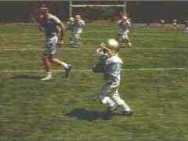

Universal/1997/88/FS 1.33
 |
Beaver catches the ball.©Universal |
Even the actors are not up to the original in this
new Beaver. Is it the direction, the script, or the shadow of the past that casts a dark
cloud over their efforts? No matter. This is by-the-numbers movie making that even
struggles to elicit laughs from the youngsters.
The 1.33 transfer seems to made from a full frame original.
Compositions seem natural. This is a very colorful DVD. There is an uncomfortable amount
of fixed film grain in a number of scenes, but otherwise the image is consistently sharp
and colors accurate. The Dolby Digital 5:1 sound track provides some nice effects.